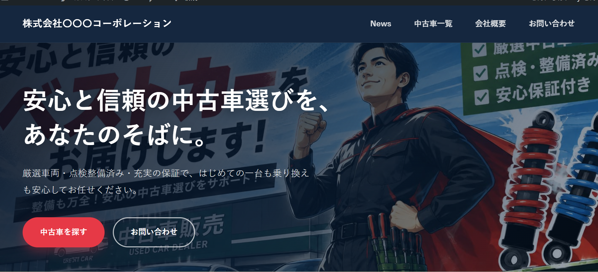
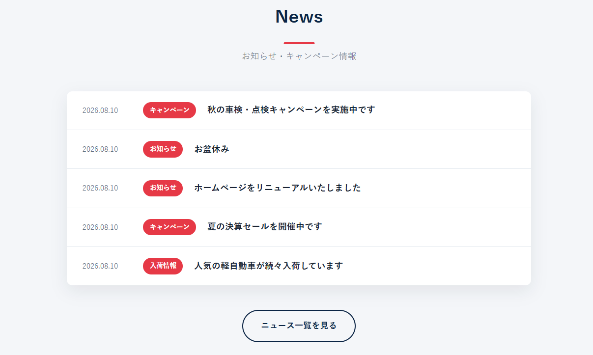
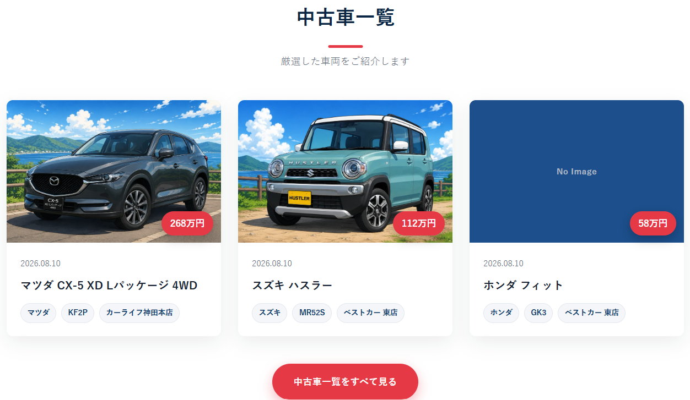
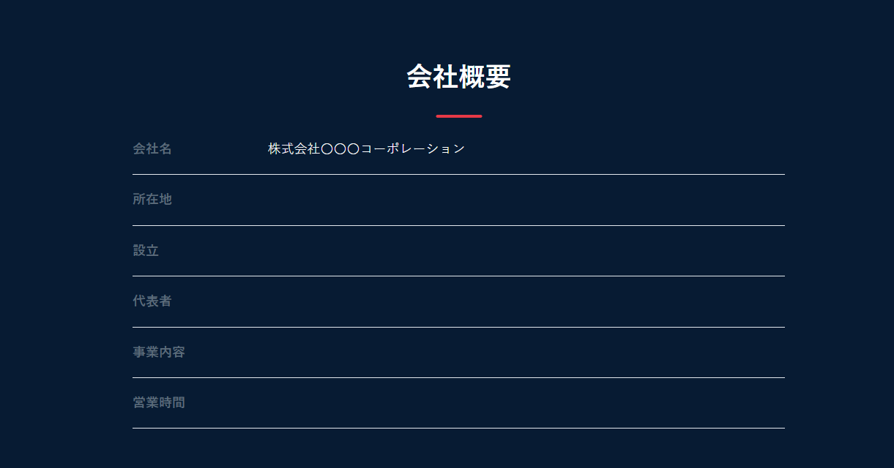
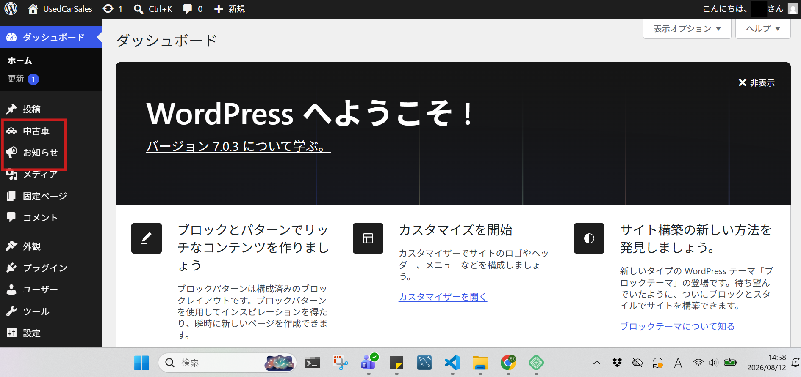
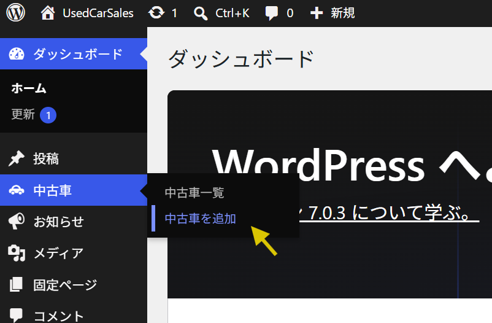
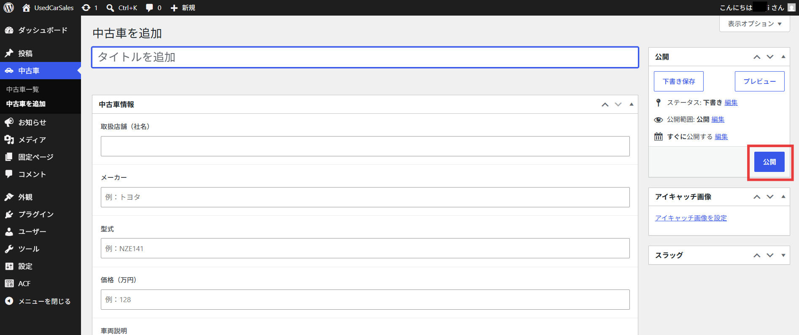
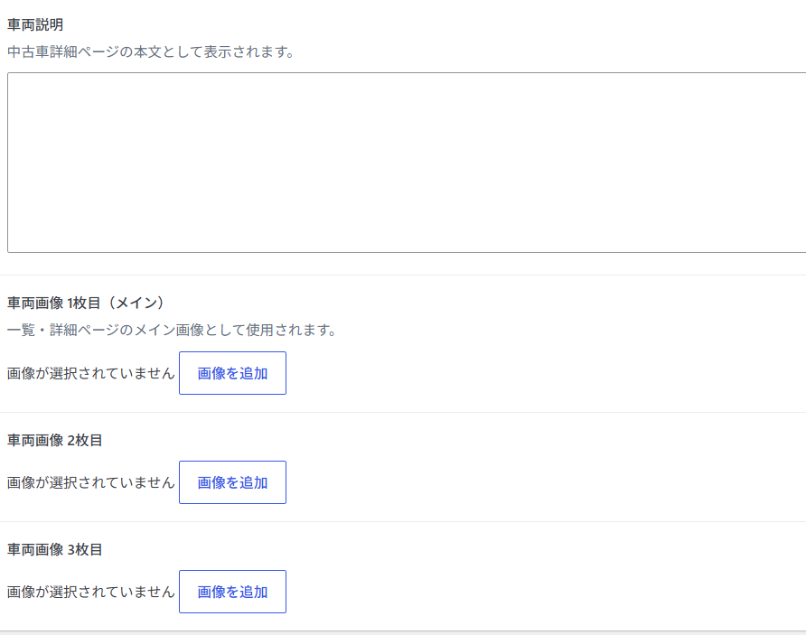
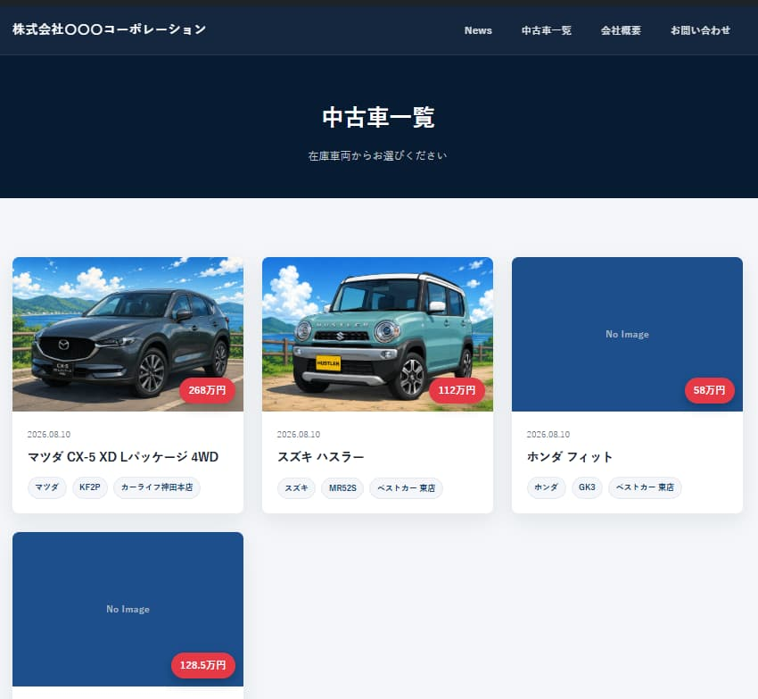

ある方は悩んでいました。
Aさん「うーん、中古車たくさんの人に見てもらいたいし、来店数も増やしたい。」
Bさん「サブスクにお金を使いたくない。でも、TV番組も見逃したくない。」
カーセンサー風 中古車販売サイト
使用言語
PHPversion 8.2
フレームワーク
WordPressversion 7.0
データベース
MySQLversion 8.4
以下は、トップページです。スクロールしていくと、、、

さらにスクロールしていくと、、、

さらに、、、

申し訳ありません！以降、手を抜いています。
見て頂きたかったのは、上記２つのコンテンツです。これは、この後紹介する管理者画面で投稿するだけで、自動的にトップページへ反映されます。フォーム入力と画像選択を直感的に操作でき、とても簡単です。スクロールを進めていってください。

ログイン完了後、以下の管理者画面が開きます。
今回の中古車販売サイトを例でいうと、使う項目は赤枠内の二つです。”中古車を追加”をクリックすると、、、


以下のようなフォーム入力画面が開きます。
スクロールしていくと画像選択ボタンがあるので、クリックして頂くと自身のエクスプローラが起動します。必須項目を入力して、画面右側にある赤枠内の”公開”をクリックすれば完了です。


編集や、削除も可能です。数が多くなる場合には、検索機能やページネーションを加える事でユーザビリティが向上します。 News（お知らせ）も、使い方は同じ要領です。例えば、ご来店時（サイト記載のキーワード提示頂ければ）ドリンク一杯無料と促し、店内では売上アップに繋がる催しを施しておく。なんていう使い方も想像できます。

さて、冒頭でのAさんの悩みは解決したでしょうか？（実際には、まだ作りこむ必要があります）
いえ、サーバに乗せなければ何も始まりません。えっと、chown、、、?
ワッツ?の状態であったインフラ未経験の私が、レンタルサーバやVPSで公開できるまでになりました。半端ではない難しさで、今でも自身がフリーズする場面はよくあります。しかし、学習を続けていく中で”学び”の大切さが芽生えていきます。（遅）
そんな初学者の私が、Bさんの悩み解決に向けて挑みました。続きを読んで頂けると嬉しいです。